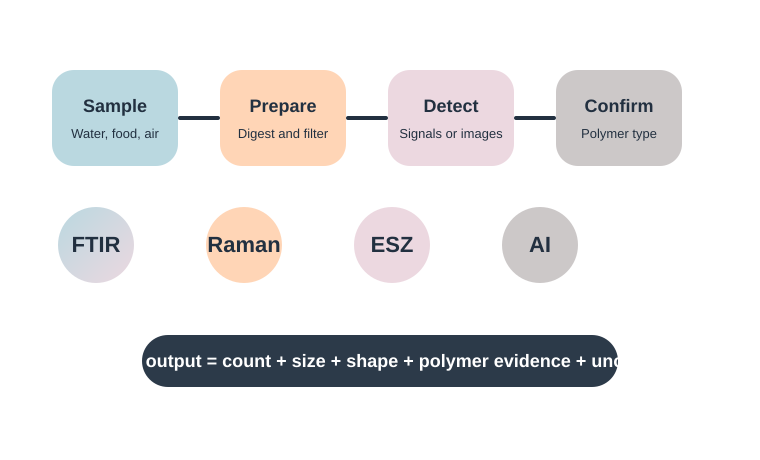

Loading technology cards
Serve the website through a local server to load dynamic JSON content.
Reliable microplastic analysis combines contamination control, sample preparation, counting, size measurement, particle description, polymer confirmation and uncertainty reporting.

A method is stronger when every step is documented and matched with the research question.
Define matrix, volume, depth, replicate strategy and contamination controls.
Filter, digest organic matter, separate particles and record recovery checks.
Measure count, size, shape and colour using microscopy or signal-based tools.
Use spectroscopic or thermal methods to confirm polymer identity.
Report units, blanks, detection limits, recovery, uncertainty and data processing rules.
Each technology answers a different part of the question. A strong study often combines more than one method.
Serve the website through a local server to load dynamic JSON content.
| Method family | Typical output | Best use | Main caution |
|---|---|---|---|
| Microscopy | Count, colour, shape and approximate size | Screening larger particles | Polymer identity remains uncertain without confirmation. |
| FTIR and Raman | Polymer fingerprint and particle-level identification | Confirming polymer type | Spectra can be affected by fluorescence, contamination and particle size. |
| Thermal analysis | Polymer mass and chemical markers | Complex matrices and mass-based reporting | Destructive and does not keep particle morphology. |
| Electrical sensing | Signal pulse, count and estimated particle size | Fast liquid-flow monitoring and classification research | Needs calibration and complementary evidence for polymer identity. |
| AI-assisted methods | Automated classification and pattern recognition | Large datasets, images, spectra and signals | Requires representative training data and transparent validation. |